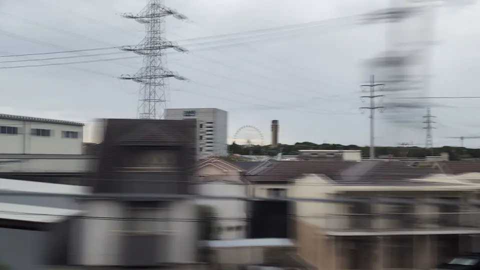
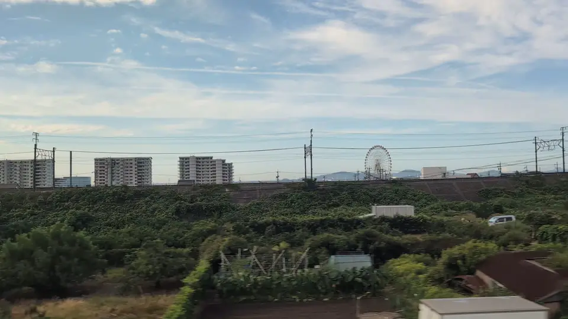
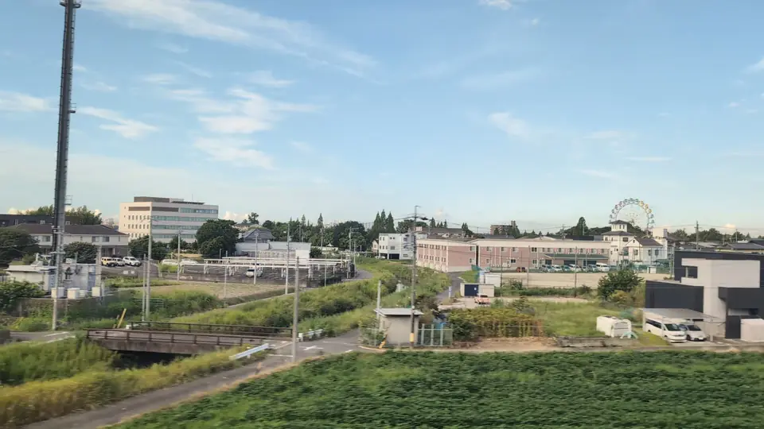
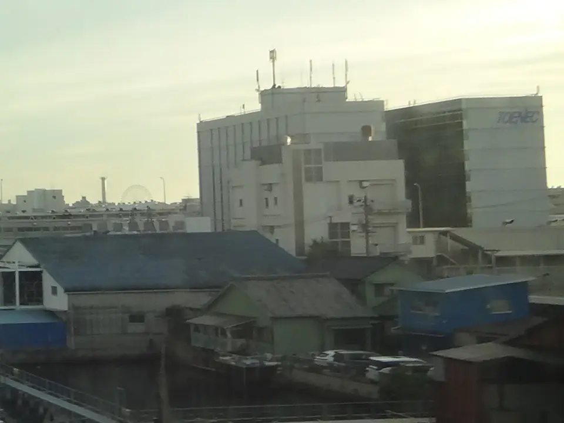
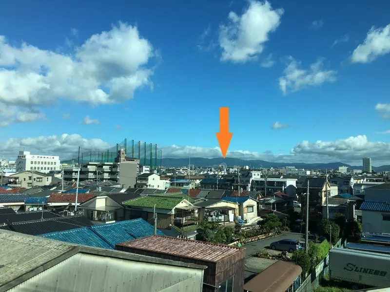

WHEEL COLLECTION
Ferris wheel collection
Record each wheel you spot and your medal grows.
Hirakata Park shares its record with the stamp in your Window Stamps.
TOKYO → SHIN-OSAKA
Follow the wheels west
Each wheel shows an estimated passing time for a Tokyo-departing Nozomi and its distance from the line. Toward Tokyo the order reverses, but the seat side stays the same. Weather and intervening buildings affect distant views.
Nonhoi Park
A wheel before Toyohashi

Just before Toyohashi, on the Seat A side, a white wheel stands beyond the roofs of houses and factories. It sits against the sky, so its shape reads even on a cloudy day.
Sighting: 新幹線の車窓から 099 (Japanese) ↗Open the location in Google Maps ↗Look around in Street View ↗Official visitor information (Japanese) ↗
Laguna Ten Bosch
Look toward the coastal town

The wheel at Laguna Ten Bosch stands in coastal Gamagori. On the Seat A side it rises white beyond apartment blocks and fields; it stands taller than the buildings around it, so it is easier to pick out than its distance suggests.
Sighting: 新幹線の車窓から 099 (Japanese) ↗Open the location in Google Maps ↗Look around in Street View ↗Official visitor information (Japanese) ↗
Horiuchi Park
A park wheel joins the journey

Horiuchi Park in Anjo has a Ferris wheel too. It appears small beyond the houses on the Seat A side before Mikawa-Anjo. Lower than the Laguna wheel, it blends easily into the buildings.
Sighting: 新幹線の車窓から 099 (Japanese) ↗Open the location in Google Maps ↗Look around in Street View ↗Official visitor information (Japanese) ↗
Nagoya Port Sea Train Land
A tiny ring in the distance

Around the Horikawa River, a faint outline of a wheel appears between buildings on the Seat A side. It is the most distant of the six and hard to catch with the naked eye. On Tokyo-bound trains it comes just after Nagoya. Accounts suggest dawn light or the evening illumination make it easier to find, while daytime tends to be backlit.
Sighting: 新幹線の車窓から 115 (Japanese) ↗Further reading: a blog account of this wheel from the window (Japanese) ↗Open the location in Google Maps ↗Look around in Street View ↗Official visitor information (Japanese) ↗
Hirakata Park
Across the Yodo River

Sky Walker appears across the Yodo River: a small ring among buildings and pylons. At night, the lit wheel floats alone on the dark far bank.
Open the Hirakata Park window guideOpen the location in Google Maps ↗Look around in Street View ↗Official visitor information (Japanese) ↗
OSAKA WHEEL at EXPOCITY
One more wheel, on the other side

Japan’s tallest Ferris wheel stands at EXPOCITY, next to the Expo park. It is the only one of the six on the Seat E side. The blog Zusshi marks its position with an arrow on a window photograph and notes it is easier to find lit up at night than by day. Seen edge-on the wheel looks narrow, and buildings can hide it.
On 10 September 2026, the official website listed a suspension of operations. Visibility from the train does not imply that the attraction or its lighting is operating.
Sighting: Zusshi, “I saw the Ferris wheel from the Shinkansen” (Japanese) ↗Open the location in Google Maps ↗Look around in Street View ↗Seat side confirmed by Suita City newsletter, July 2024, p. 8 (Japanese PDF) ↗Official tourism information ↗
ONE TO CHECK NEXT
Fuji Sky View at Fujikawa SA
A candidate between Shin-Fuji and Shizuoka. A traveller mentions noticing it from the Shinkansen. Its window view and seat side still need confirmation before it joins the collection.
About this collection
The estimated times, seat sides and distances are calculated by projecting each facility onto our track data, which is built from recorded GPS rides. They assume a 147-minute Nozomi between Tokyo and Shin-Osaka; trains with more stops or delays will differ.
Facility coordinates come from the Japanese Wikipedia, except Hirakata Park, which uses our own spot data.
If you have photographed one of these wheels from the train, we would love to hear from you. Contact